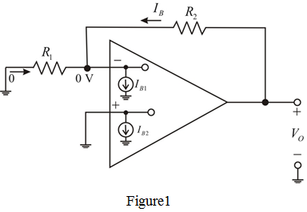

(a)
Calculate the gain of non-inverting amplifier.
Substitute  for
for  and
and  for .
for .
Calculate the output voltage with the input grounded.
Substitute for  and for
and for  .
.
Therefore, the output voltage,  is .
is .
(a)
Draw the closed loop amplifier circuit.

(a)
Calculate the gain of non-inverting amplifier.
Substitute for and for .
Calculate the output voltage with the input grounded.
Substitute for and for .
Therefore, the output voltage, is .
(b)
Calculate the largest possible output that can be observed with the input grounded.
Substitute  for , for
for , for  and
and  for
for  .
.
Therefore, the largest possible output,  is .
is .
(c)
Calculate the required value of resistor for bias current compensation.
for bias current compensation.
Connect a resistor in series with positive input terminal of op-amp. Therefore,
in series with positive input terminal of op-amp. Therefore,
Therefore, the required value of unknown resistor,  is
is  .
.
Calculate the resulting output offset voltage, .

Therefore, the output offset voltage,  is
is  .
.
Calculate the largest dc voltage at the output due to the combined effect of offset voltage and offset current for bias current compensation.
Therefore, the largest dc voltage at the output,  is .
is .